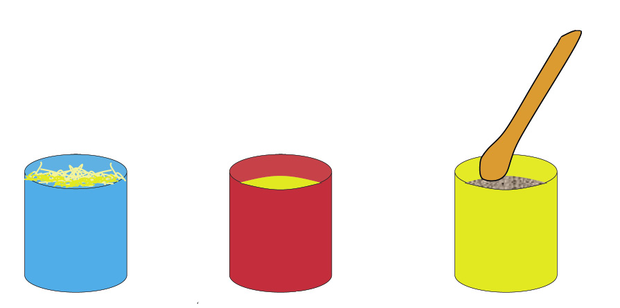
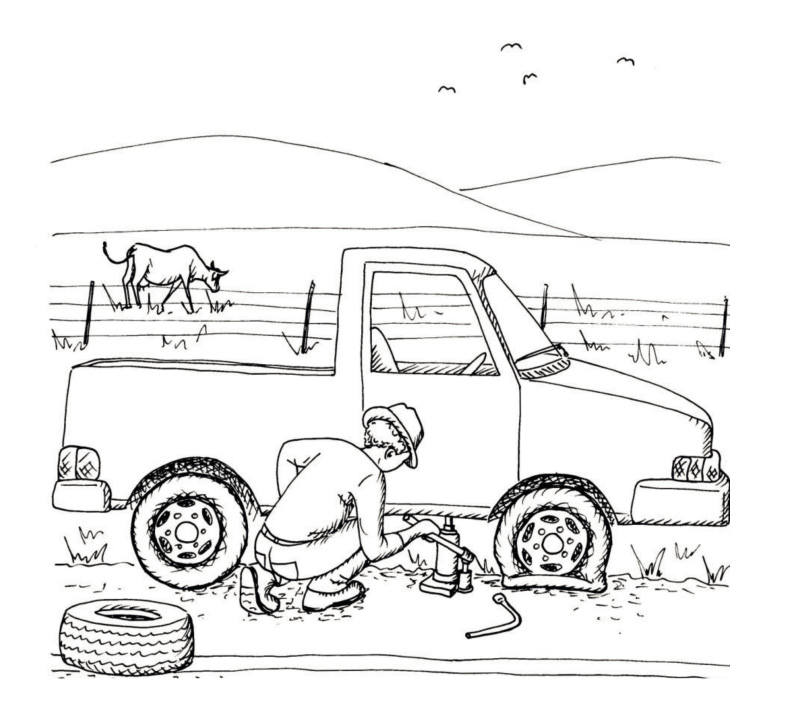
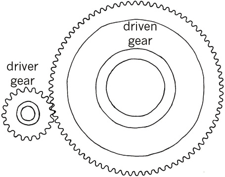

5 Hidroulika en pneumatika
Hierdie hoofstuk is hersiening van wat jy reeds weet oor hoe om voorwerpe met lug en water te beweeg. Jy gaan meer leer oor die verskille tussen pneumatiese en hidrouliese stelsels, en jy gaan leer hoe om hidrouliese stelsels te gebruik om met die toepassing van 'n klein krag 'n groot las te beweeg.


5.1 Die gebruik van water en lug om voorwerpe te beweeg
Saamdrukbare en onsaamdrukbare substansies
Die blou blikkie bevat opgefrommelde strooi, die rooi blikkie bevat water en die geel blikkie bevat sand.

-
Dink jy dit is moontlik om die sand met 'n houtlepel saamte druk sodat dit minder ruimte in die geel blikkie opneem? J/N
-
Dink jy dit is moontlik om die strooi saam te druk? J/N
-
Dink jy dit is moontlik om die water saam te druk? J/N
Strooi, gras en opgefrommelde papier is “saamdrukbaar”. Dit beteken dat dit saamgedruk kan word om minder ruimte in te neem. Sand is “onsaamdrukbaar”. Dit beteken dat dit nie saamgedruk kan word om minder ruimte in te neem nie.
-
-
Is water saamdrukbaar of onsaamdrukbaar?
-
Is lug saamdrukbaar of onsaamdrukbaar?
-
Hoe kan jy 'n spuit gebruik om die saamdrukbaarheid en onsaamdrukbaarheid van lug en water te ondersoek?
-
Lug is saamdrukbaar maar water is onsaamdrukbaar.
Twee spuite wat met 'n rubberbuis verbind is, kan 'n "spuitstelsel" genoem word.
As die rubberbuis en die spuite met lug gevul is, word dit 'n "pneumatiese stelsel" genoem. As die rubberbuis en die spuite met water of olie gevul is, word dit 'n"hidrouliese stelsel" genoem.

-
As die suier aan die linkerkant ingedruk word, druk die suier aan die regterkant teen die hand. Sal die drukking op die hand met 'n pneumatiese stelsel dieselfde wees as met 'n hidrouliese stelsel? Verduidelik jou antwoord.
'n Pneumatiese en hidrouliese stelsel word hieronder gewys. In elke geval is die twee spuite presies ewe groot. Twee swaar voorwerpe rus op die regterkantse suiers.

Figuur 6 -
Wat sal met die blou voorwerpe gebeur as die linkerkantse suier in beide stelsels met 2 cm ingestoot word? Verduidelik jou antwoord.
5.2 Dik en dun spuite
-
Die vrou met die groot vrag hoef net 'n klein afstand na haar huis toe te loop. Die vrou met die klein vrag moet nogal ver huis toe loop. Wie sal die moegste wees as sy by die huis aankom? Verduidelik jou antwoord.
Die prent hieronder wys 'n tweespuitstelsel met 'n dikker en 'n dunner spuit. Die stelsel is met water gevul totdat daar geen lugborrels meer was nie.

Aksienavorsing
Jy gaan nou meer aksienavorsing met twee spuite onderneem. Om dit te doen, moet jy 'n apparaat bou.
Kopieer hierdie liniale op 'n papiervel en heg hulle aan 'n stuk geriffelde karton, of 'n stuk karton van 'n graankosboks vas. Die lyne op die liniale is 2 mm van mekaar af.

Heg jou spuitstelsel, soos wat op die volgende bladsy gewys word, met kleefband aan die geriffelde karton of graankosboks vas.
As jy die suier aan die linkerkant indruk, sal die suier aan die regterkant uitbeweeg.
Die spuit waarvan jy die suier indruk, word die meestersilinder of insetsilinder van die stelsel genoem. Die silinder wat uitbeweeg, word die slaafsilinder of uitsetsilinder van die stelsel genoem.
Jy gaan nou navorsing doen om te sien hoe ver die uitsetsilinder uitbeweeg as die insetsilinder oor 'n spesifieke afstand ingedruk word.
-
Trek water in die insetsilinder op, totdat dit byna vol is en plaas die suier regoor 'n merk op die liniaal.
-
Maak 'n klein merkie by die bopunt van die suier van die uitsetsilinder.
-
Druk die insetsilinder se suier 1 cm in.
-
Meet hoe ver die uitsetsilinder uitbeweeg het.
-
Skryf jou afmeting op die tabel hieronder.
-
Herhaal stappe 1 tot 4, maar druk nou die insetsilinder 2 cm in.
-
Herhaal al die stappe van 1 tot 4 vir afstande van 3 cm en 4 cm.
|
Insetsilinderbeweging in cm |
1 |
2 |
3 |
4 |
|
Uitsetsilinderbeweging in cm |

-
Dink nou aan die scenario waar jy die dik spuit die meestersilinder en die dun spuit die slaafsilinder gemaak het. Hoe ver dink jy sal die suier van die dun spuit beweeg as jy die suier van die dik spuit 1 cm indruk?
-
Voorspel ook wat sal gebeur as jy die suier van die dik silinder 'n ½ cm,1 cm of 2 cm indruk. Skryf jou voorspellings in die tabel hieronder.
Dik meestersilinder se beweging in cm
½
1
2
Dun slaafsilinder se beweging in cm
-
As jy tyd het, doen meer navorsing om jou voorspelling na te gaan.
Dik meestersilinder se beweging in cm
½
1
2
Dun slaafsilinder se beweging in cm
Jy verrig werk wanneer jy die meestersilinder indruk. Die slaafsilinder verrig weer werk wanneer dit aan die ander kant beweeg. Die hoeveelhede werk aan die insetkant (meestersilinder) en aan die uitsetkant (slaafsilinder) moet dieselfde wees, want werk word nie sommer verniet verrig nie!
-
Wat merk jy op? Jy het nou ondersoek hoe die afstand van beweging verander as jy die werk wat op een silinder verrig word na 'n ander silinder met 'n ander dikte oordra. Is dit slegs die afstand waaroor beweeg word wat verander? Plaas 'n vinger op die suier van die slaafsilinder wanneer jy die suier van die meestersilinder indruk. Doen dit op twee verskillende maniere, deur eers die dun spuit as die meestersilinder te gebruik, en dan die dik spuit as die meestersilinder te gebruik.
5.3 Verandering van groottes van kragte deur 'n hidrouliese sisteem
Die prentjie wys 'n plastieksak wat met water gevul is. As jy jou linkerwysvinger liggies teen die sak sit en met jou regterwysvinger teen die sak druk, wat dink jy sal jy met jou linkerwysvinger voel?
As druk toegepas word op 'n buigbare houer gevul met vloeistof, word dieselfde druk orals in die houer gevoel. Die druk word deur die vloeistof "gelei" of "oorgedra". Let wel: "Druk" is nie dieselfde as "krag" nie, alhoewel dit daaraan verwant is. 'n Paar eeue gelede het 'n man met die naam Blaise Pascal dit besef en daaroor geskryf. Dit staan as"Pascal se beginsel" bekend.
Jy gaan nou 'n bietjie aksienavorsing doen om te ondersoek hoe druk deur water oorgedra word. Om dit te doen benodig jy dieselfde spuitstelsel op karton gemonteer wat jy gebruik het vir jou eksperimente in die vorige afdeling. Plaas dit hierdie keer regop en ondersteun dit met boeke of iets anders wat stewig is. Jy het ook klein voorwerpe nodig wat ewe veel weeg, byvoorbeeld klein boksies vol sand.
-
Trek water in die dik silinder op totdat dit byna vol is. Jy gaan dit as die insetsilinder gebruik.
-
Plaas een boksie op die suier van die uitsetsilinder. Plaas een boksie op die suier van die insetsilinder.
Beweeg die suier van die uitsetsilinder?
-
Plaas nog 'n boksie op die suier van die insetsilinder. As die suier van die uitsetsilinder nog nie opwaarts beweeg nie, plaas nog boksies op die insetsilinder.

Figuur 10 -
Dink oor wat jy nou net waargeneem het.Watter invloed het die boksies wat jy op die insetsilinder geplaas op die uitsetsilinder gehad?
Die boksies op die insetsilinder druk afwaarts op die suier in die stelsel. Hierdie druk word deur die water in die stelsel op die suier in die uitsetsilinder oorgedra en druk dit opwaarts.
In plaas daarvan om te sê "die boksies druk afwaarts" sê die tegnoloë gewoonlik dat "die boksies 'n afwaartse druk uitoefen".
-
Het die suier van die uitsetsilinder verder beweeg as die suier van die insetsilinder?
-
Was die krag, uitgeoefen deur die boksies wat jy op die insetsilinder geplaas het, gelyk aan die opwaartse krag wat op die enkele boksie op die suier van die uitsetsilinder uitgeoefen is?
-
Dink terug aan die twee vrouens op pad huis toe met hulle sakke in afdeling 5.2. Wat het hulle storie en hierdie eksperiment in gemeen? Dink goed na voordat jy jou antwoorde in die spasie hieronder neerskryf.
Wanneer werk van ’n dik silinder na ’n dun silinder oorgedra word, is die krag wat uitgeoefen word op die suier van die dun silinder, kleiner as die krag wat toegepas word op die suier van die dik silinder. Dit is waarom jy meer as een boksie op die dik silinder se suier moes plaas voordat dit een boksie op die dun silinder se suier opwaarts kon beweeg. Die druk in die vloeistof is orals dieselfde, op die insetsilinder se suier asook op die uitsetsilinder se suier. Maar omdat die insetsilinder dikker is, is die krag op die insetsilinder groter as die krag op die uitsetsilinder.
Volgende week
In die volgende hoofstuk sal jy leer hoe hidrouliese stelsels gebruik word om motors en ander swaar voorwerpe op te lig.
6 Hidrouliese masjiene
In hierdie hoofstuk leer jy hoe hidrouliese stelsels in praktiese situasies gebruik word.


6.1 Die gebruik van druk om dinge gedoen te kry
As jy 'n bottel hard op 'n papiervel afdruk, kan jy 'n perfekte ronde merk op daardie papier maak.

Jy kan ook 'n bottel soos hierdie gebruik om koekies uit platgerolde deeg te druk. Plat plastiek- of metaalvoorwerpe kan op dieselfde manier gemaak word deur hulle uit plastiekvelle of metaalplate te druk. In die geval van metaal moet die afwaartse druk baie groot wees.
-
Tom wil harde staalbuise met skerp rande gebruik om wasters uit 'n ysterplaat te druk. Kan hy 'n soort hefboom gebruik wat hom sal help om genoeg krag uit te oefen om die staalbuise deur die metaalplaat te druk?
Maak 'n skets op die volgende bladsy om te wys hoe dit gedoen kan word. Die masjien wat jy ontwerp, kan 'n wasterpers genoem word.

Figuur 6 In plaas daarvan om 'n hefboom te gebruik om 'n groot genoeg krag uit te oefen om die waster uit te druk, kan 'n hidrouliese stoottoestel gebruik word.

'n Masjien soos hierdie word 'n "hidrouliese pers" genoem.
Die meganiese voordeel wat verkry word deur die gebruik van 'n uitsetsilinder wat dikker is as die insetsilinder word in 'n hidrouliese pers gebruik.
Baie dorpe in Suid-Afrika gebruik vullisvragmotors om sakke afval en ander vullis te versamel.
Volgelaai neem hierdie vragmotor 15 kubieke meter vullis, dit wil sê ongeveer 120 vullissakke. Die vragmotor beskik oor 'n hidrouliese pers wat die vullis met 'n drukkrag van 15 ton of 15 000 kg kan saamdruk. As jy wil weet hoe groot hierdie krag is, dink aan hoe swaar 'n tweeliter-koeldrankbottel in jou hand voel. Nou dink hoe dit sal voel om 7 500 van hulle in jou hand vas te hou!
Omdat die vragmotor die vullis saampers, kan dit ongeveer 2 000 sakke oplaai voordat dit vol is.
As die uitsetsuier dikker is as die insetsuier, is die uitsetkrag groter as die insetkrag. Die meganiese voordeel is groter as 1.
As die uitsetsuier dunner is as die insetsuier, is die uitsetkrag kleiner as die insetkrag. In hierdie geval is die meganiese voordeel kleiner as 1.

Figuur 10 wys dieselfde soort stelsel as figuur 9. Die geel gedeelte is water of 'n ander soort vloeistof. Die rooi en blou dele is silinders wat op en af kan beweeg.
-
-
Dink aan 'n hidrouliese stelsels soos in figuur 10, wat omtrent 50 cm hoog is. As die blou silinder 5 cm na onder gedruk word, sal die rooi silinder 5 cm na bo beweeg, of minder as 5 cm, of meer as 5 cm?
-
Veronderstel 'n las word bo-op die rooi silinder geplaas, byvoorbeeld 'n kas met appels. Sal die opwaartse krag op die vrag dieselfde wees as die afwaartse krag wat op die blou silinder uitgeoefen word, of sal dit groter of kleiner wees?

Figuur 10
-
As die uitsetsilinder in ’n eenvoudige hidrouliese stelsel dikker is as die insetsilinder, is die uitsetafstand kleiner as die insetafstand, maar die uitsetkrag groter as die insetkrag.
6.2 Berekeninge oor hidrouliese stelsels
-
Hieronder word 'n hidrouliese stelsel met reghoekige silinders gewys. Die oppervlakte van die rooi silinder se top is vier maal so groot as die oppervlakte van die blou silinder se top.

Figuur 11 -
Die volume van die vloeistof wat aan die regterkant na onder gedruk word, styg aan die linkerkant op en druk die rooi silinder na bo.
-
As die blou silinder met 12 mm na onder beweeg, met hoeveel mm sal die rooisilinder na bo beweeg?

Figuur 12 -
In die stelsel wat op die volgende bladsy gewys word, is die oppervlakte van die basis van die uitsetsilinder nege maal die oppervlakte van die basis van die insetsilinder.
-
Wat is die meganiese voordeel van die stelsel?
-
Wat is die afstandsvoordeel van die stelsel?

Figuur 13
-
-
In 'n spesifieke hidrouliese pers beweeg die uitsetsilinder 2 cm ver, as die insetsilinder deur 10 cm beweeg. Hoeveel maal groter is die uitsetkrag as die insetkrag?
-
n 'n spesifieke hidrouliese pers is die deursnitoppervlakte van die uitsetsilinder 40 cm², en die deursnitoppervlakte van die insetsilinder 5 cm².
-
Hoe ver sal die uitsetsilinder beweeg as die insetsilinder deur 16 cm beweeg word?
-
Hoe ver moet jy die uitsetsilinder stoot om die uitsetsilinder deur 24 cm te laat beweeg?
-
Die oppervlakte van die top van die silinder is net so groot soos die oppervlakte van die basis van die silinder, en dis net so groot soos die oppervlakte van enige snit wat mens loodreg op die lengte van die silinder maak. Dit word daarom die deursnitoppervlakte genoem.
As jy sukkel om bogenoemde te verstaan, dink aan ’n rol polonie of ’n reghoekvormige brood. Elke stuk wat jy van die polonie of brood afsny, het presies dieselfde vorm en grootte, en daarom ook dieselfde oppervlakte.
As die blou silinder die groen volume vloeistof aan die regterkant ondertoe druk, sal die rooi silinder deur die groen volume vloeistof aan die linkerkant opwaarts gedruk word.
As die oppervlakte van die basis van die uitsetsilinder vier maal die oppervlakte van die basis van die insetsilinder is, sal die uitsetkrag vier maal so groot as die insetkrag wees. Die uitsetafstand sal ¼ van die insetafstand wees.
In hierdie geval is die meganiese voordeel vier, en die afstandsvoordeel is ¼.
6.3 Die hidrouliese motordomkrag

As 'n buiteband pap word, moet die motor opgelig word om die pap wiel af te haal en die noodwiel aan te sit. Omdat die motor te swaar is om met jou kaal hande op te lig, het jy 'n toestel met 'n meganiese voordeel nodig.
Die toestel waarmee motors opgelig word om die wiele om te ruil, word 'n domkrag genoem. 'n Domkrag verskaf 'n meganiese voordeel. Op die volgende bladsy word verskillende soorte domkragte gewys.

'n Botteldomkrag het 'n hidrouliese stoottoestel aan die binnekant, wat 'n meganiese voordeel gee. As die blou insetsilinder oor 'n spesifieke afstand na onder gedruk word, beweeg die rooi uitsetsilinder met 'n groter krag na bo, maar oor 'n kleiner afstand.

-
Kyk na figuur 14 op die vorige bladsy. Dink jy die motor sal hoog genoeg opgelig word as die insetsilinder net een keer na onder gedruk word?
Om die motor hoog genoeg op te lig moet die uitsetsilinder 'n hele paar maal hoër gestoot word. Om dit te doen moet die insetsilinder elke keer opwaarts getrek word om vir die volgende afwaartse stoot gereed te wees. Dink aan spuite om te verstaan wat gebeur. Jy kan weer met twee spuite van verskillende groottes eksperimenteer.
Figuur 17 Figuur 18 -
As die blou insetsuier ingedruk word, beweeg die rooi uitsetsuier uit. Wat dink jy sal gebeur as die insetsuier nou weer uitgetrek word?
As die uitsetsilinder kan bly waar dit is na die insetsilinder afwaarts gedruk is, kan die uitsetsilinder hoër gedruk word elke keer as die insetsilinder na onder gedruk word. Ons kan olie by die stelsel voeg om dit moontlik te maak.
'n Regte hidrouliese botteldomkrag het 'n addisionele bottel met olie, soos in die diagramwat hieronder gewys word.
Om die rooi silinder te laat bly waar dit is elke keer as die blou silinder na bo getrek word, moet die olie gekeer word om nie van onder die rooi silinder uitgesuig te word nie. Miskien moet iets soos 'n waterkraan in die wit blokkie in die diagram aan die regterkant geplaas word.
'n Balklep soos die een aan die regterkant laat vloeistof toe om in een rigting deur 'n buis te vloei, maar nie in die ander rigting nie. Hierdie balklep bestaan uit 'n bal wat met 'n veer verbind is. Die veer druk die bal teen die opening sodat die vloeistof nie kan deurvloei nie.
As die vloeistof probeer om van die linkerkant na die regterkant te vloei, word die bal van die opening weggestoot en kan die vloeistof deurgaan.
Die belangrikste deel van 'n hidrouliese motordomkrag is 'n groot uitsetsilinder wat by die bek van die bottelvorm uitsteek. Dit lig die motor op as jy die handvatsel pomp.
Binne die bottel is 'n tenk met olie. Die olie vloei deur die balklep na die plek waar die insetsilinder is. Die balklep laat die vloeistof nie toe om terug te vloei nie.
Die pomphandvatsel is met die klein insetsilinder verbind en druk dit in soos die suier in 'n spuit. Terwyl jy pomp, gaan die insetsilinder op en af en dwing die olie na die uitsetsilinder deur 'n ander balklep.
Elke keer as die insetsilinder afgestoot word, stoot die uitsetsilinder 'n klein afstand na bo, maar met 'n groot krag wat die motor oplig.
As die insetsilinder na onder gedruk word, gaan die rooi klep toe en die blou klep oop. Die olie word dan verby die blou klep gestoot en dit druk die uitsetsilinder opwaarts.
Wanneer die uitsetsilinder opgetrek word, gaan die rooi klep oop en olie word van die tenk af ingetrek. Die blou klep gaan toe sodat die olie nie van die kant van die uitsetsilinder kan terugvloei nie. As gevolg hiervan beweeg die uitsetsilinder nie terwyl die insetsilinder opgetrek word nie.
Maak op die volgende bladsy 'n stelseldiagram van die werking van 'n motordomkrag. Die prent hieronder kan jou help om te dink aan al die verskillende stappe soos wat mens aanhou om olie te pomp met die insetsilinder. Die stelseldiagram moet die verskillende stappe wys wanneer mens twee keer die insetsilinder afdruk en weer optrek.
Let op dat die addisionele tenk olie in die prent hieronder 'n gat in die middel het waarin die uitsetsilinder pas. Hierdie tenk word ook die oliereservoir van die hidrouliese stelsel genoem.
Skets jou stelseldiagram van 'n motordomkrag op hierdie bladsy.
'n Belangrike vraag
Watter veiligheidsreëls moet mense volg as hulle 'n motordomkrag gebruik?
Evalueer die ontwerp van 'n hidrouliese motordomkrag
-
Wie gebruik hidrouliese motordomkragte?
-
WWat doen 'n mens met 'n hidrouliese motordomkrag?
-
Is 'n hidrouliese motordomkrag 'n goeie stuk gereedskap om 'n motor mee op te lig? Verduidelik.
-
Van watter materiale word hidrouliese motordomkragte gemaak?
-
Wat kos 'n hidrouliese motordomkrag min of meer?
-
Is dit die moeite werd om soveel geld vir 'n hidrouliese motordomkrag te betaal?
-
Is dit nodig dat 'n hidrouliese motordomkrag mooi lyk?
-
Is 'n hidrouliese motordomkrag veilig om te gebruik?
Volgende week
Jy het hierdie week geleer hoe kleppe gebruik kan word om die vloei van olie en die beweging van die uitsetsilinder van 'n motordomkrag te beheer. Volgende week gaan jy leer oor ander maniere om beweging te beheer. Jy gaan ook van katrolle en katrolstelsels leer.
7 Katrolle en beheerstelsels

7.1 Rigtingverandering met 'n tou
Verskillende maniere om iets op te hys
Die man in figuur 2A op die vorige bladsy wil 'n sak nat sout tot by die tak ophys. Hy wil die sak aan die tak vasmaak sodat dit daar kan hang totdat die wind die sout uitgedroog het. Om die sak bo te kry het hy 'n tou oor die tak gegooi en die een punt van die tou aan die sak vasgemaak.
-
Merk die rigting waarin die man trek met 'n pyltjie op die prent op die vorige bladsy.
-
Merk die rigting waarin die sak sal beweeg ook met 'n pyltjie.
-
-
Dink jy dat die tou vir altyd sal hou as die man dit gebruik om swaar voorwerpe opwaarts en oor die tak te trek?

Figuur 3: Hierdie tou skuur teen die rand van 'n steen.
As jy met dieselfde stuk tou herhaalde kere swaar voorwerpe ophys, sal die tou, soos jy in die foto kan sien, verweer en uiteindelik breek.
As twee oppervlakke teen mekaar vryf, is daar kragte wat op die materiale inwerk en dele van die materiale kan breek. Die kragte wat materiale op mekaar uitoefen wanneer hulle teen mekaar vryf of skuur word "wrywingskragte" genoem. Op 'n koue dag vryf jy soms jou hande teen mekaar om hulle warm te maak. Die warmte is van die wrywingskragte afkomstig.

Om te voorkom dat wrywing 'n tou beskadig wat gebruik word om rigting te verander, kan jy die tou oor 'n wiel, wat 'n katrol genoem word, laat beweeg.

Die stelsel wat die man in figuur 5 gebruik, word 'n enkelwiel-vastekatrolstelsel genoem. Die doel daarvan is om die rigting van die trekkrag te verander, maar dit gee nie 'n meganiese voordeel nie.
Die man kan nie deur net een keer te trek die sak van die grond af tot by die tak ophys nie. Hy moet 'n plan maak sodat die sak nie na onder val terwyl hy sy greep verander om vir nog 'n trek gereed te maak nie.
Die diagram hier regs wys 'n toestel wat 'n "nokklamp" genoem word. As die tou opwaarts getrek word, sal die nokke nader aan die tou beweeg, dit vasknyp, en verhoed dat dit kan deurgly.
Devices like a cleat, or the valves you learnt about in Chapter 6, allow certain movements, but prevent other movements. Devices such as these are called control devices.
You can experiment with a pencil between your thumb and forefinger as shown below, to experience how a cam cleat works.


-
Make a rough sketch in the space below to show where the man in Figuur 5 can put a cam cleat to make it easier to lift the sack up to the branch.
An important experiment
You need a piece of string or a shoelace, and a cup or beaker with a handle.
Put the cup on your desk. Pull the string or shoelace through the handle of the cup. Hold the one end of the shoelace in the air with your left hand. Pull the other end of the string upwards with your right hand to lift the cup. Let the string slide through the handle.

Is the cup raised by the same distance as you raised your right hand? Repeat the experiment and observe the movements so that you can observe the distances clearly. Try to explain your observation.
7.2 Different ways to use a pulley
The system on the right is called a block-and-tackle.
Look carefully at the three diagrams on the opposite page, that show different ways in which pulleys can be used when lifting an object with a rope.
In the diagrams, the red pulleys are fixed to the support structure: they can turn but they cannot move. The red pulleys are called fixed pulleys. The blue pulleys can move, and they are called moveable pulleys.
Figuur 10C shows a single wheel fixed pulley system.
Figuur 10B shows a single wheel moveable pulley system.
Figuur 10A shows a pulley block system, also called a block and tackle.

-
Look carefully at Figuurs 10A and 10C.
-
If the rope in Figuur 10A is pulled down by 50 cm, will the load (the black object) also move up by 50 cm?
-
If the rope in Figuur 10B is pulled up by 50 cm, will the load (the black object) also move up by 50 cm?
-
When will you do more work, when you pull the rope in Figuur 10A down by50 cm, or when you pull the rope in Figuur 10C down by 50 cm?
-
-
In what way do the moveable pulleys, shown in blue, help to make it easier to lift the black object? If you have difficulty with this question, remember what you experienced when you did the experiment with the string and the cup on page 103.


In pulley systems such as these, the purpose of the fixed pulleys, that are shown in red, is to change the direction of the rope, so that you can pull down to lift an object up. It is easier for your body to pull a rope downwards than to pull it upwards.
The picture below could help you to better understand how a moveable pulley system works.
Suppose the load is 50 cm below the hook. To pull the load up to the level of the hook, the hand must pull up 100 cm of rope. So the hand moves up 100 cm while the load only moves up 50 cm.
Because the hand moves twice the distance of the load, the force required is the same as you would need to pick up half the load (5 kg) directly.
7.3 Mechanical control systems
You can ride a bicycle very fast.

However, to be safe when you ride a bicycle, you need to be able to control the speed. You need brakes. One type of bicycle brake is shown in the photograph on the right. The diagrams on the next page will help you to understand this photograph better.

Think of a pair of scissors:

A pair of scissors can also be made like this:

The handles could be bent like this:

The brake system in the photograph (Figuur 13) is actually a pair of callipers, as you can see from Figuur 17 on the opposite page.

-
Do the following:
-
On the picture above, draw the part of the bicycle wheel that fits between the brake blocks. This is the front view.
-
On the next page, draw a side view of the calliper (note that the brake blocks will look different in a side view and there will be a few hidden lines).
Colour the two arms with different colours.
Label the brake blocks and pivot.
Use arrows to show how the parts move when the brake is pulled.
Make your drawing of the side view of a bicycle calliper brake system here:
-
Car disc brakes also use a caliper. This caliper works in a different way to a bicycle brake. It exerts a squeezing force on a disc behind the car wheel.


A disc brake system consists of a brake disc, a caliper and brake pads.
When the brake pedal is pushed, it moves the input piston, which pushes hydraulic oil into the output piston.
The output piston then squeezes the brake pad against the surface of the brake disc. This contact causes friction, which forces the vehicle to slow down or stop.
One-way control systems
A brake system prevents movement completely. It does not allow movement in any direction.
A valve system, like that in a hydraulic car jack, only prevents flow (movement of a liquid) in one direction, but allows flow in the opposite direction. A cam cleat is like a valve, it allows movement in one direction, but not in the opposite direction.

The device below is called a ratchet and pawl. The wheel with the teeth is the ratchet, and the other object is the pawl.

-
Make a free-hand sketch at the bottom part of the next page to show how a one-way control system can be used together with a block and tackle system to lift heavy loads.

Draw a block and pulley with a one-way control system in the space below:
A question to make you think
Why is it easier for the girl to get across the wall, than for the boy? Try to explain how this is similar to levers, hydraulic systems and moveable pulley systems.


Next week
Next week, you will learn more about different kinds of gears and gear systems.
8 Gears
In this chapter, you will revise spur gear systems and how they can be used to change the direction, speed and turning force of rotation. You will calculate number of revolutions, rotation speeds and turning forces.
You will also look at other types of gears, namely bevel gears, rack-and-pinion gear systems, and worm-gear systems. These other types of gear systems make it possible to change the direction of rotation in ways that spur gears cannot do.
_opt.jpeg)
8.1 Direction of rotation of spur gears
Counter rotation and idler gears
-
How many teeth do each of these gears have?
-
The black gear is turned clockwise until the yellow dot reaches the position shown in Figuur 4. Draw arrows next to Figuur 4 to show where the blue and red dots will be.

Figuur 3 -
In what direction did the blue gear turn?

Figuur 4 -
Through which part of a full revolutiondid each gear turn?
-
The two blue and black gears in the above situation turn in opposite directions. This can also be described by saying that the two gears counter-rotate.
-
The dark blue gear on the left below is turned anti-clockwise through two thirds of a full turn. Indicate with arrows where each of the yellow dots will be afterwards.

Figuur 5 -
If the red gear below is turned anti-clockwise, in what direction will the grey gear turn?

Figuur 6: Counter-rotation -
In the situation below, the red gear drives the blue gear and the blue gear then drives the grey gear. If the red gear is turned clockwise, in which direction will the grey gear turn?

Figuur 7: A blue idler gear -
If the red gear in the above system makes one full turn, how many turns will the blue gear make, and how many turns will the grey gear make?
Number or rotations of driver and driven gears
Suppose the red gear in Figuur 8 drives the small grey gear. The red gear has 18 teeth and the grey gear has 6 teeth. For every 1 tooth in the grey gear, there are 3 teeth in the red gear.

When a gear has made a full turn, you can say it has made one full revolution.
-
If the red driver gear makes one full revolution anti-clockwise, how many revolutions will the grey driven gear make, and in which direction?
-
If the red driver gear makes 8 full revolutions, how many revolutions will the grey driven gear make?
-
How many revolutions should the red gear make for the grey gear to make 12 revolutions?
-
In a different set of gears, the driver gear has 20 teeth and the driven gear has 80 teeth. How many full revolutions will the driven gear make if the driver gear makes 20 full revolutions?
Speed of rotation of driver and driven gears
Suppose the small gear in Figuur 9 drives the big gear. The small gear has 20 teeth and the big gear has 40 teeth.
-
If the small driver gear makes 12 revolutions in one minute, how many revolutions will the driven gear make in the same time?

Figuur 9 -
If the small driver gear in Figuur 9 makes 40 revolutions in one minute, how many revolutions will the driven gear make in the same time?
-
Look at the situation in Figuur 9 again. If the driver gear with 20 teeth turns at 80 rpm, at what speed will the driven gear with 40 teeth turn?
-
If you want the driven gear in Figuur 9 to turn at a speed of 120 rpm, how fast should the driver gear be turned?
If a gear makes 40 revolutions in one minute, we say the gear turns at a speed of 40 revolutions per minute. The abbreviation rpm is often used for “revolutions per minute”.
8.2 Gear ratio, rotational speed and rotational force


A road roller has a bigger engine than a sports car, but moves much slower.
To make a heavy road roller move, a large turning force needs to be applied to the wheels. If the output rotational speed of the wheels is much slower than the input rotational speed of the engine, then the output rotational force will be much bigger than the input rotational force. A road roller uses a set of gears that changes the fast rotational speed of the engine into a very slow rotational speed of the wheels, so that the rotational force at the wheels is strong enough to move the heavy road roller.
With a sports car, a much smaller rotational force is needed at the wheels, because the car is light. The set of gears used to start moving a sports car also changes the fast rotational speed of the engine into a slower rotational speed of the wheels, but not as slow as with the road roller. So with a sports car, the wheels turn faster but with a smaller turning force than the road roller.
-
Look at the set of gears in Figuur 12. The driver gear has 20 teeth and the driven gear has 80 teeth?
Is this gear system increasing the rotational force or decreasing it? Explain your answer.
Figuur 12
Revision of what you learnt about gears in grade 8
Look at the set of gears on the right. The big gear is the input gear, and the small gear is the output gear.

Each gear is fixed to an axle, and the axle drives a fan. The speed with which the fan turns is called the rotational speed of the axle.
When a gear with many teeth drives a gear with fewer teeth, the driven gear turns faster, but with a smaller turning force than the driver gear.
When a gear with few teeth drives a gear with many teeth, the driven gear turns slower, but with a bigger turning force than the driver gear.
Gear ratio is defined as follows:
-
Calculate the gear ratio of the set of gears inFiguur 12.
Gear ratio and speed ratio is the same thing. It can also be called "velocity ratio".
You can write a gear ratio in different ways, for example "2 to 1", "2:1" or simply "2",
Turning force is also called torque.
-
In Figuur 12, if the input axle is rotating at 120 rpm, at what speed is the output axle rotating?
-
In Figuur 12, which axle will turn with the greatest force, the driver or the driven axle?
Comparing turning forces on the input and output axles
In Chapter 7 you learnt how a system of pulleys can give you a mechanical advantage to make it easier to hoist up heavy objects. You will now investigate how a gear system can do the same, by changing a small turning force on the input axle into a big turning force on the output axle.
Look at Figuur 14 below. The input (driver) gear has 9 teeth and the output (driven) gear has 18 teeth. A rope is wound around each axle.
Note: You will only consider axles with the same diameter in this chapter. When the diameters of the axles around which the ropes are wound are different, you also need to think about that to compare turning forces.
-
What is the gear ratio?
For one full revolution of the input gear, how many revolutions will the output gear make?
If you pull the input rope down by 2 cm, how far will the output rope be pulled up? Draw the vertical part of the output rope in the "position at the end" part of Figuur 14 to show where the output rope will be after you pulled the input rope down by 2 cm.
Will the force exerted by the output rope be bigger or smaller than the force applied to the input rope? How much bigger or smaller?
Hint: Think of the situation as if it was a pulley system. You already know the relationship between the input distance and the output distance.
If you pull down with a force equal to3 kg on the input side, how heavy a load can be lifted on the output side? Write this below and also on Figuur 15.
The 3 kg input weight in Figuur 15 represents the turning force exerted on the input axle. The output weight represents the turning force exerted by the output axle. You will now check your answer to question 6 by using the formulas for gear ratio:
You have already used the numbers of teeth on the input and output gears to calculate that the gear ratio is 2:1. It can also be written simply as 2.
If you re-arrange the blue part of the formulas, you can make the turning force on the output axle the subject of the formula:
(turning force on output axle) = (gear ratio) × (turning force on input axle)
-
Use the formula above to check your answer to question 5.
-
Consider other sets of gears with ropes around the axles, as you did on the previous page:
-
In a certain system, the input gear has 6 teeth and the output gear has 18 teeth. If you apply 4 kg of force on the input rope, what is the heaviest load that can be lifted by the output rope?
-
In a certain system, the input gear has 12 teeth and the output gear has 30 teeth. If you want to lift a load of 75 kg on the output rope, with what force in kilograms must you pull the input rope?
-
A certain person can only pull with a maximum force of 25 kg. That person needs to hoist loads of up to 150 kg. Design a gear system that will allow that person to hoist the heavy loads. In others words, how many teeth should the input and the output gears have?
-
8.3 Other types of gears
Bevel gears
The shafts of the two spur gears in Figuur 16 on the left are parallel, but the shafts of the two gears in Figuur 17 on the right are at right angles to each other. The gears in Figuur 17 also have a different shape to ordinary spur gears to make them work better at right angles to each other. They are called bevel gears
Bevel gears are used to change the direction of circular motion in devices such as the hand drill in Figuur 18 and the food mixer in Figuur 19. We can say that the axes of rotation of the two gears are at right angles.

-
Do you think bevel gears can also be used to change the speed of rotation? Explain your answer and give examples.
-
Why is fast rotation needed to beat eggs properly?
-
In a particular bevel gear set, the gear ratio is 1 to 12.
-
The driven gear in this gear set has eight teeth. How many teeth does the driver gear have?
-
How many revolutions will the driver gear make if the driven gear makes 60 revolutions?
-
How fast should the driver gear turn to make the driven gear turn at 36 rpm?
-
-
Suppose you want to buy a food mixer to help you mix ingredients when you bake a cake. Which food mixer would require the biggest force to turn when you mix: the mixer with a ratio of 1:3 or a mixer with a gear ratio of 1:30? Explain your answer.
Rack-and-pinion gears

In Figuur 20, you can see a shell structure that is bolted to the ground on the inside of the gate.
-
What do you think is inside the shell structure in Figuur 20, and why is it there?
-
In which direction will the gate move when the gear wheel is turned clockwise (as seen from inside the gate), in Figuur 20?
The gear wheel is called the pinion gear.
The straight bar with teeth is called the rack gear.
When something moves round and round, like a wheel, the movement is called a circular motion or rotation.
When something moves in a straight line, like a stone falling, the movement is called a linear motion.